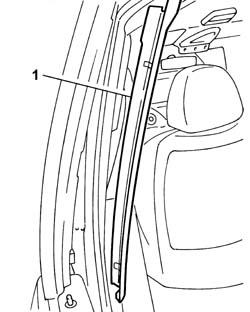
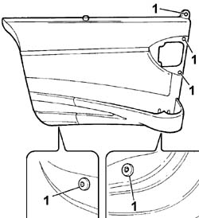
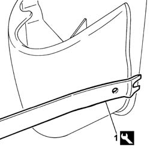
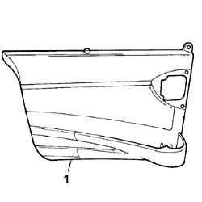

7020C30 SLIDING DOOR INTERIOR PANEL - R+R
- Path
- Procedures > 70 FITTINGS > 7020 LOAD COMPARTMENT DOORS > 7020C SLIDING SIDE DOOR > 7020C30 SLIDING DOOR INTERIOR PANEL - R+R
- Kind
- repair procedure (removal / refitting; the operation number is the code)
- Applies to
- all engines; all production periods
- Interactive page
- https://sloeber94.github.io/elrnDB-fUlss/en/#/179007709
Applies to: all engines; all production periods
 Removing
Removing
 Refitting
Refitting- Carry out
Op. 7050A02 SIDE REAR INDIVIDUAL SEAT (ONE), LEFT OR RIGHT - R.R.
- Carry out
Op. 7020D32 SLIDING SIDE DOOR INTERIOR OPENING HANDLE/ESCUTCHEON (INTERIOR) - R.R.
1. Release the pillar trim from the retaining clips and remove it.

Applies to: all engines; all production periods
1. Undo the bolts fixing the inner panel to the bodyshell.

Applies to: all engines; all production periods
1. Use the appropriate tool to release the clips fastening the side door interior panel.
Description | Code | Function | |
|---|---|---|---|
1 | Knife | 1.878.077.000 | Prise up the plastic clips |

Applies to: all engines; all production periods
1. Remove the sliding side door interior panel.

Applies to: all engines; all production periods
Refitting
Removing- Position the sliding side door interior panel in its seat and tighten the bolts.
- Position the front pillar trim in its seat and do up the clips.
- Carry out
Op. 7020D32 SLIDING SIDE DOOR INTERIOR OPENING HANDLE/ESCUTCHEON (INTERIOR) - R.R.
- Carry out
Op. 7050A02 SIDE REAR INDIVIDUAL SEAT (ONE), LEFT OR RIGHT - R.R.
Topics linked from this page (2)
- 7020D32 SLIDING SIDE DOOR INTERIOR OPENING HANDLE/ESCUTCHEON (INTERIOR) - R.R.
- 7050A02 SIDE REAR INDIVIDUAL SEAT (ONE), LEFT OR RIGHT - R.R.
Topics that link to this page (14)
- 5505B30 WIRING BUILT INTO SLIDING SIDE DOOR LEFT OR RIGHT R R
- 5505B31 SLIDING SIDE DOOR INCORPORATING WIRING WITH SLIDING SIDE DOOR PANEL REMOVED. S-R
- 7020D10 SLIDING DOOR LOCK - R+R OR REPAIR
- 7020D20 INTERIOR/EXTERIOR HANDLE PROTECTION FOR ONE SLIDING SIDE DOOR - R.R.
- 7020D24 ANTI-INTRUSION PANEL FOR REAR DOOR, LEFT OR RIGHT - R. & R.
- 7020D28 SLIDING SIDE DOOR OUTER HANDLE SUPPORT (ONE) LEFT OR RIGHT - R. & R.
- 7020D65 SLIDING SIDE DOOR ROD S-R
- 7020D32 SLIDING SIDE DOOR INTERIOR OPENING HANDLE/ESCUTCHEON (INTERIOR) - R.R.
- 7020D34 SLIDING DOOR INTERIOR HANDLE - R+R
- 7020D58 SLIDING SIDE DOOR INTERIOR OPENING RELAY DEVICE (WITH HANDLE) (ONE) R.R. FOR REPAIR OR REPLACE
- 7020D62 KNOB FOR SLIDING SIDE DOOR SAFETY DEVICE, LEFT OR RIGHT - R.R.
- 7020C02 SLIDING SIDE DOOR WATER PROTECTION - R.R.
- 7020C80 SUN BLIND FOR LEFT OR RIGHT SLIDING SIDE DOOR S-R
- 7020N20 MOTOR CATCH ASSEMBLY ONE OF SLIDING SIDE LOCK LEFT OR RIGHT R R